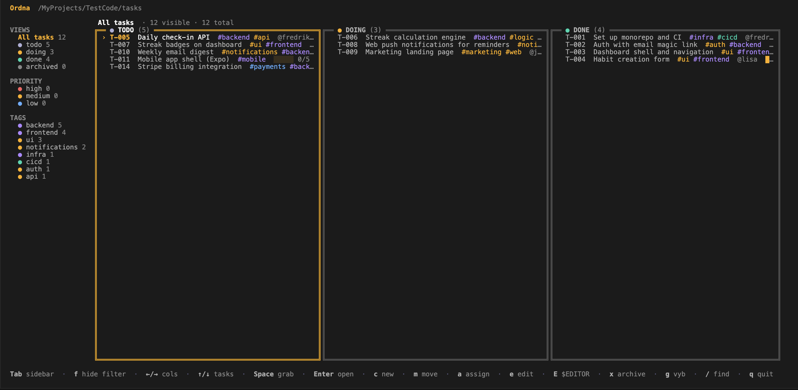
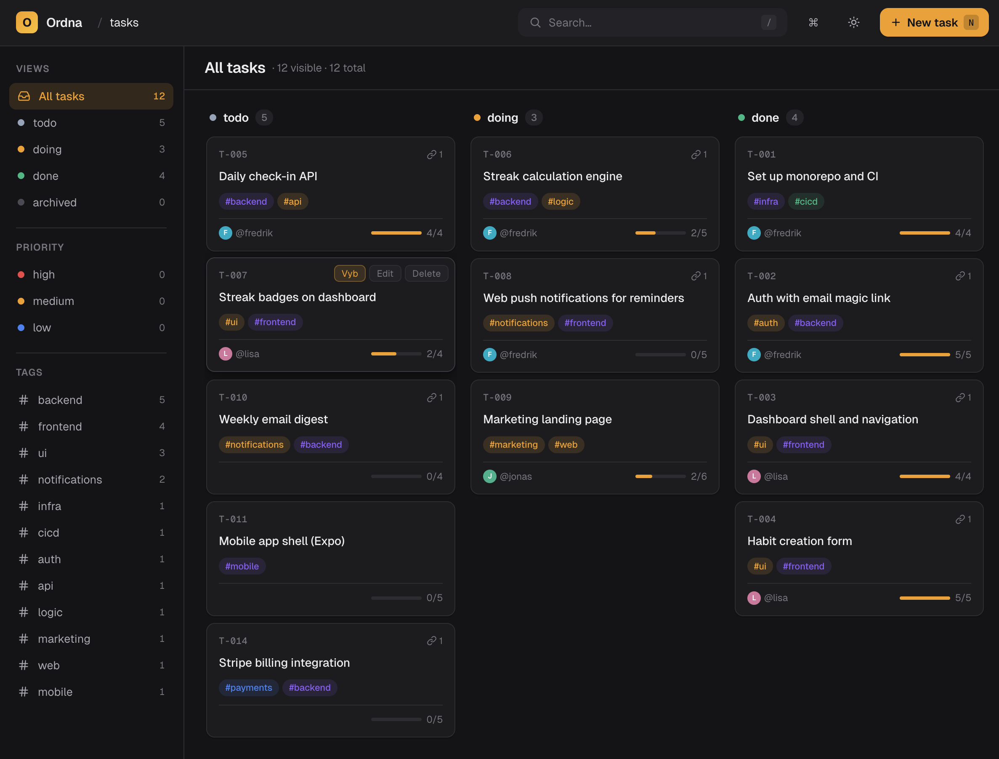

Ordna is a local-first, git-based task board you run from your terminal or your browser. No servers, no logins, no SaaS — just markdown files, plain commits, and an API your agents can drive.


Every feature traces back to one idea: your tasks should live next to the code they describe — versioned, reviewable, and editable by anyone (or anything) that can edit a file.
Every task is a markdown file. Every move is a commit. Use the merge tools you already have to resolve conflicts, blame to find who changed what, and branches to plan what-ifs.
Boards live in .ordna/ in your repo. There is no Ordna server. There is nothing to sign up for. It works on a plane, and it works in 2032.
A keyboard-driven TUI for the terminal and a polished web UI for the browser. Both read and write the exact same files.
Plain markdown + JSON, committed alongside your code. Migrate, grep, script, or quit any time — there is nothing to export.
Every action — move, assign, create, filter, archive — is one or two keystrokes. Touch your mouse only when you want to.
Filter by #frontend, by @assignee, by priority, or by saved views. Combine and refine without leaving the keyboard.
Different work on different branches stays on different branches. Merging brings the work with it — no duplicate tickets.
Drop @frehilm/ordna-core into any Node project. Use it for dashboards, CI checks, scripts, or your own UI.
Pick your interface — terminal, browser, or both. They share the same on-disk format, so you can mix and match per project.
# Install globally — one binary, no daemons $ npm install -g @frehilm/ordna-cli # Or run without installing $ npx @frehilm/ordna-cli ordna # Open the keyboard-driven board in your repo $ ordna # Common commands $ ordna add "Refund flow — partial amounts" $ ordna move T-007 doing $ ordna list --status review $ ordna assign T-007 @fredrik
All MIT-licensed, all written in TypeScript, all share @frehilm/ordna-core under the hood.
Everything the CLI and Web UI do, they do through the same public API. Embed it in dashboards, CI jobs, agent loops, or your own custom client.
Promise-based, fully typed, no global state, no required runtime dependency apart from git. Open a board, list it, mutate it, save it. That's the whole shape.
import { openBoard } from "@frehilm/ordna-core"; // Read the board next to your code const board = await openBoard(process.cwd()); // What did we ship since yesterday? const shipped = await board.tasks({ status: "done", closedAfter: subDays(new Date(), 1), }); for (const task of shipped) { console.log(`✓ ${task.id} ${task.title}`); } // Mutations are just function calls await board.add({ title: "Schedule retro", status: "todo", tags: ["chore"], }); await board.commit("chore: prep retro card");
Because every task is a file and every state change is a commit, an agent can plan, claim, and finish work end-to-end — and you review it as a normal pull request.
See the agent recipeDrop this URL into your agent's context — it documents the commands, file layout, and conventions Claude, Cursor, or your own loop needs to plan, claim, and ship work on the board.
Every plan, move, and decision shows up in git log. Pair work, blame, bisect — all of it just works.
Ordna is small enough to learn in a coffee break, and stays out of your way for the next ten years.